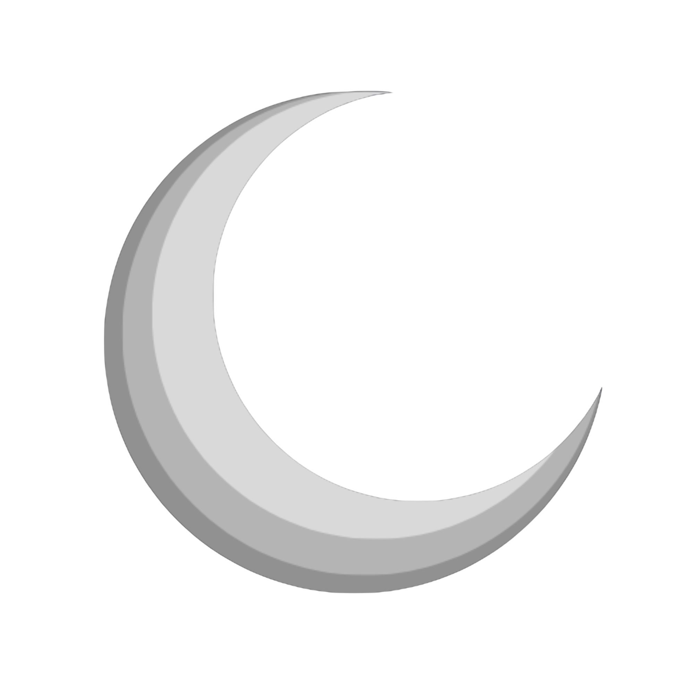

Prazer! Somos estudantes da Etec Dr. Ruth Cardoso.
Estamos realizando uma pesquisa sobre poluição luminosa e seus
impactos na saúde humana e nos ecossistemas.
Ao responder, você atua ajudando a embasar soluções tecnológicas e
sustentáveis para o planeta.
ARRASTE PARA COMPARAR
por que o céu noturno está desaparecendo
as consequências que não vemos
A exposição à luz artificial noturna suprime a melatonina, aumentando riscos de insônia, depressão, obesidade e cânceres.
Aves migratórias perdem orientação, tartarugas marinhas desviam das praias e insetos polinizadores morrem atraídos pelas fontes de luz.
O caminho para resgatar a noite
Shields e armaduras full-cutoff direcionam 100% da luz para o solo, eliminando completamente o vazamento espúrio de luminosidade direcionada para cima e para o horizonte.
Sensores de presença avançados e dimmers automáticos reduzem de forma programada a intensidade luminosa de vias públicas e pátios comerciais quando não há circulação de pessoas.
Luminárias de temperatura de cor quente (âmbar) dispersam consideravelmente menos partículas na atmosfera devido ao comprimento de onda e causam um impacto infinitamente menor sobre o ciclo biológico da fauna noturna.
Apoio e mobilização direcionada a leis municipais e decretos que limitem tetos de emissão por metro quadrado, vetem outdoors comerciais após a meia-noite e organizem zonas escuras protegidas.
Projetos científicos integrados como este desenvolvido na Etec Dr. Ruth Cardoso! O levantamento estatístico regional, a análise de dados e a ampla divulgação digital formam o alecerce fundamental para a mudança de comportamento social.
Experimente o impacto da iluminação urbana em tempo real
Como as luzes da cidade afetam a nossa visão das estrelas? Desenvolvemos um simulador digital exclusivo onde você assume o controle da iluminação urbana. Adicione postes, ligue refletores e veja o fenômeno do Skyglow acontecer diante dos seus olhos, apagando o brilho do céu noturno.
Abrir Simulador InterativoMétricas de engajamento regional
Quem está por trás do projeto
Este projeto nasceu dentro da Etec Doutor Ruth Cardoso (São Vicente - SP), como parte integrante dos requisitos de avaliação acadêmica da instituição. Movido pelo desejo de entender os impactos silenciosos da poluição luminosa, o trabalho investiga profundamente como o excesso de luz artificial afeta a biodiversidade, a estabilidade ecológica e a saúde humana.
Através de uma abordagem metodológica que une conceitos de física óptica, biologia celular e tecnologia, nossa missão é conscientizar a comunidade regional e propor estratégias sustentáveis para que nossas cidades possam crescer em segurança sem apagar, de forma definitiva, o brilho do céu noturno.
Acesse a pesquisa acadêmica completa sob o título original "POLUIÇÃO LUMINOSA: Impactos nos ecossistemas e na saúde humana". Confira nossos dados estatísticos sobre consumo energético, referências regulamentares e a fundamentação teórica do projeto.
Ler Artigo Completo (PDF)Sua voz importa para mapear o brilho das nossas cidades
O projeto ganha força com dados reais. Leva menos de 2 minutos para responder ao nosso formulário e o seu relato vai direto para o dashboard de estatísticas do nosso site. Vamos juntos defender o nosso direito ao céu estrelado?
Ir para o Formulário